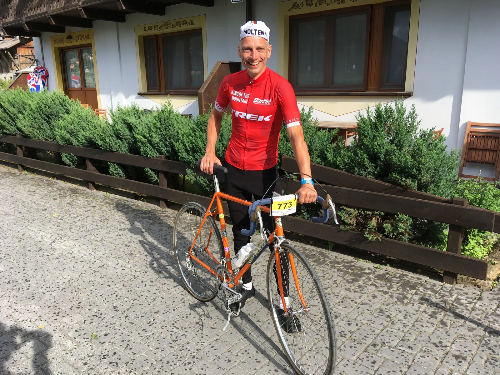
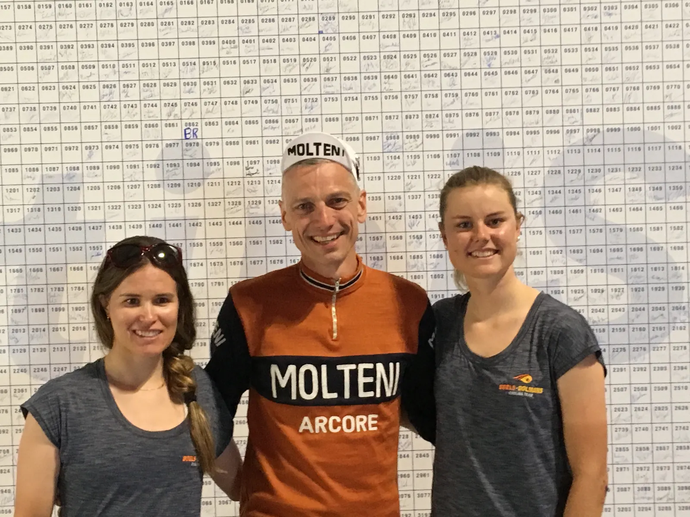
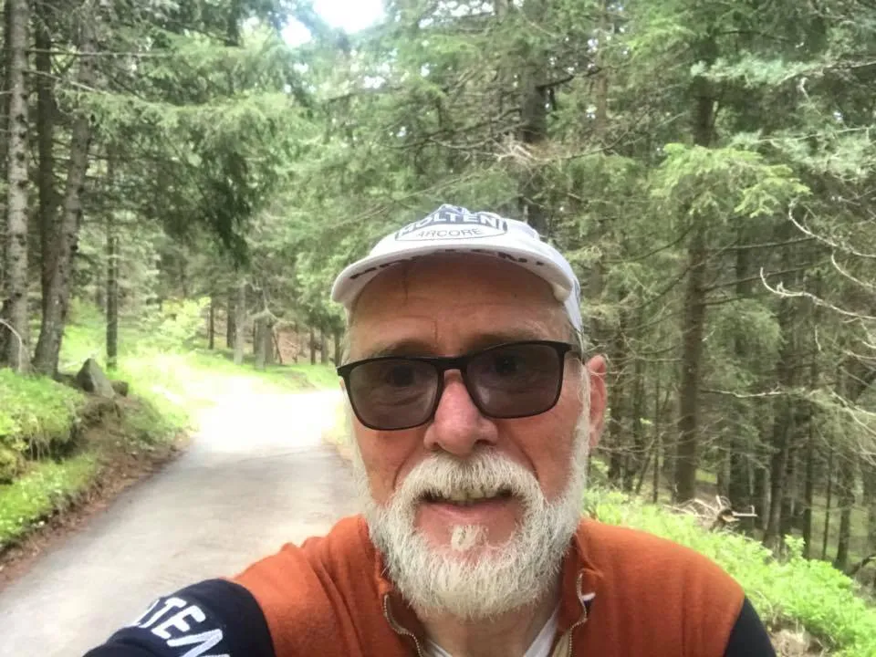
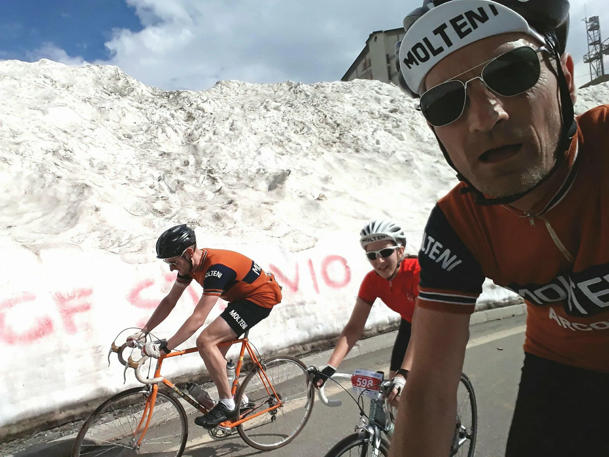

Granfondo Stelvio 2018

Granfondo Stelvio Santini’s lange rute på 151 km. består af Teglio og La Motta som antipasti. Så kommer Passo del Mortirolo som primi, og til sidst Passo Dello Stelvio som secondi.
Et voldsomt måltid at komme igennem. Og det er uden diskussion Passo del Mortirolo, som er den største udfordring. Mortirolo er en morder.
Squadra Molteni havde sendt Kristian Blume, Jens Langergaard, Maria Winther, Kasper Sørensen og Niels Bjørnsteen til årets Granfondo Stelvio Santini.
King of the Mountain
Strategien var ret simpel – og den lykkedes til fulde. Kristian Blume skulle afsted fra start for fulde gardiner.
– Og det lykkedes. Med en fedtprocent på 2,1, havde vi store forventninger til Kristian. Og de blev indfriet til fulde. Kristian nærmest fløj over bjergene – og vi så ham ikke resten af dagen. Han vandt den rødprikkede “King of the Mountain” jersey for stålcykel-klassen, som blev overrakt af løbsdirektøren og med Amalie Dideriksen og Karol Ann Canuel som kyssepiger, fortæller en tilfreds Kaptajn Bjørnsteen.




Dieselmotor og byspurt
På de første 40 km. havde Jens Langergaard vagten. Han slog den store dieselmotor til – og trak resten af holdet sikkert frem til første bjerg, Teglio.
– Her kørte vi lidt henholdende i starten. Vi satte farten lidt op til sidst i et perfekt leadout for Kaptajnen, der vandt Teglio-byspurten i suveræn stil, og sikrede dermed holdet vigtige UCI-point, fortæller Løjtnant Kasper Sørensen.
Mortirolo er en morder!
Efter har have repareret Kaptajn Bjørnsteens kæde, der flækkede et led efter den voldsomme bjergbyspurt, kørte holdet videre mod næste store udfordring: Passo del Mortirolo.
Her var den interne aftale, at hver især måtte komme op i eget tempo. Stigningen er simpelthen så stejl, at alt andet er umuligt. Jens Langergaard kæmpede bravt hele vejen op ad de sindssyge procenter.
– Det blev ren overlevelse. Kasper kom hurtigt ind i et godt tempo og gled væk. Det samme gjorde Niels og Maria. Motirolo er ganske enkelt en sindssyg, brutal stigning. Jeg havde dybere og dybere kriser op af den 12 kilometer lange stigning. Men jeg kom op. Jeg mødte Kasper, Maria og Niels efter nedkørslen. Her fortalte jeg dem, at de skulle køre mod Stelvio uden mig, fortæller Jens Langergaard.

36 hårnålesving
Fra bunden af Motirolo til Bormio er der godt 30 km. Det er det der kaldes “falsk fladt”. Det vil sige, at det stiger hele vejen 3-6% og et par steder med 10%. I centrum af Bormio begynder opkørslen til Passo Dello Stelvio. 22 km og 1500 meter op i himlen.
Det var en hård tur ind til Bormio. Desværre var der ingen gruppe at søge læ bagved, så Kasper, Maria og Niels, måtte selv æde vinden. Alle tre havde både en lille mental og fysisk krise på dette tidspunkt. Stelvio var svær at se frem til.
Stigningen op til Stelvio starter jævnt, og med tankerne på Mortirolo måske endda lidt behageligt. Maria havde en kort krise i starten, men genvandt styrken og tog så føringen de næste 10-12 km.
– Roligt men sikkert blev der ædt kilometer, og snart var vi oppe hvor sneen stadig lå og skinnede. De sidste 3-4 kilometer var luften meget tynd, og det kunne mærkes, fortæller Maria.
Nedtællingen af de 36 hårnålesving gik noget langsomt, men ca. halvvejs åbner stigningen sig op i et fantastisk landskab med udsigt til et majestætisk vandfald.
– Der var lange tider, hvor der ikke blev sagt ret meget. Der blev kæmpet, og alle havde kriser på tidspunkter op af Stelvio, men holdet forblev sammen, og hjalp hinanden gennem. Det var overvældende at nå toppen efter næsten 10 timer – helt udkørt, siger kaptajn Niels Bjørnsteen.

Løbet er brutalt, og selvom der er lidt færre højdemeter end f.eks. La Marmotte, så kan de ikke sammenlignes. Mortirolo er en dræber, der suger alt kraft ud, og med en kort nedkørsel efterfulgt af en lang indkørsel med stigning på indtil Stelvio’s bund, så når man aldrig at genvinde kræfterne helt.
Løbet blev rundet af med lidt pasta og øl efterfulgt af lidt pasta og mere øl og så med en pizza til dessert.
Mortirolo, vi ses aldrig mere!